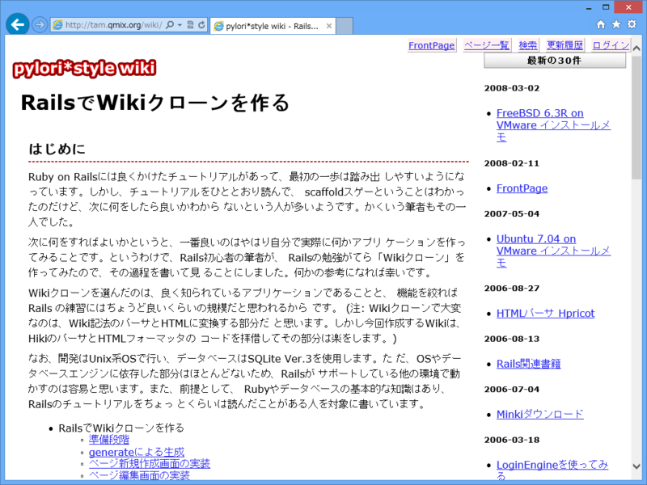
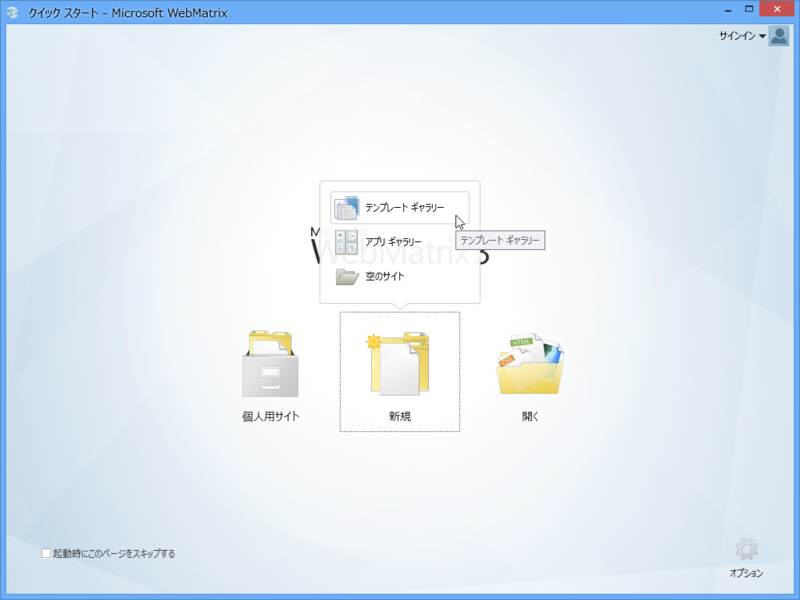
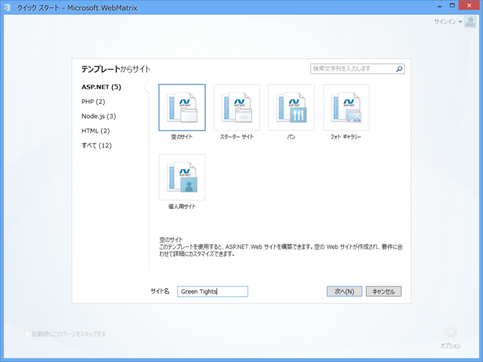
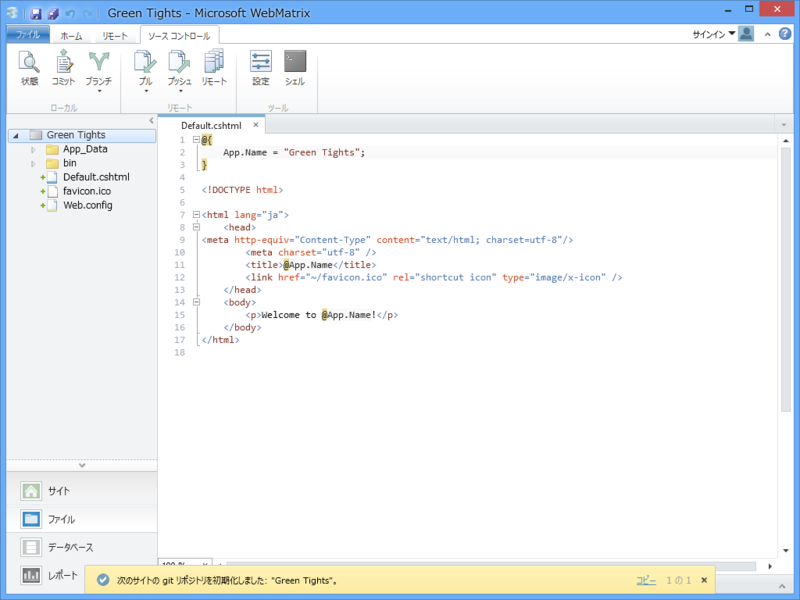
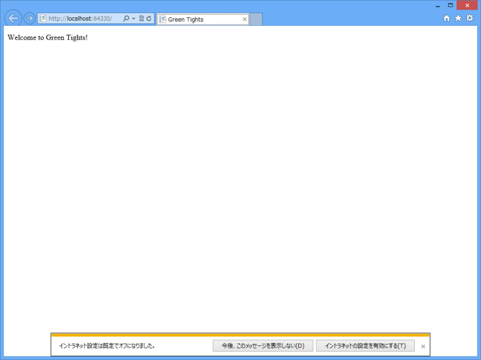

WebMatrix 3 で Wiki クローンを作る vol.0
執筆日時：

Ruby on Railsには良くかけたチュートリアルがあって、最初の一歩は踏み出 しやすいようになっています。しかし、チュートリアルをひととおり読んで、 scaffoldスゲーということはわかったのだけど、次に何をしたら良いかわから ないという人が多いようです。かくいう筆者もその一人でした。
昔、Web アプリが作りたいなぁ、と思って手を出したのが Ruby on Rails でした。このサイトを参考にしながら、少しずつ Wiki を作って勉強したのを覚えています。当時は C# で Web アプリが書けるというのを知らなかったし、その環境も整っていなかった。なので、わざわざいちから Ruby という新しい言語を覚える必要がありました。それはそれで楽しいことだったし、今でもその経験は役に立っているのですけど、やっぱり使い慣れた C# で書けるならばそれに越したことはない。
今なら C# で Web アプリが簡単に作れる WebMatrix という優秀なツールがあります*1。でも、僕がかつてお世話になったチュートリアル的なコンテンツはまだまだ少ないのが現状です。
んなわけで、“WebMatrix 3 で Wiki クローンを作る（WebMatrix 3 で Wiki クローンを作る）”というのを、不定期にボチボチやっていこうかなと思います。でも、あんまり期待しないでください。
必要なもの
これだけです。できれば http://www.microsoft.com/visualstudio/jpn/products/visual-studio-express-for-web があるといろいろ便利。フレームワークには ASP.NET Web Pages 2 | Microsoft Docs を利用しますが、とりあえず今のところは「C# で PHP っぽく Web アプリが書けるもの」だとでも思っていただければ結構です。
プロジェクトの新規作成

テンプレートギャラリーから……

ASP.NET の“空のサイト”を選択。今回は @Webmatxirxman（https://twitter.com/WebMatrixMan）に敬意を表して「Green Tights」としました。“C:\Users\***\Documents\My Web Sites\Green Tights”がプロジェクトフォルダーになります。

まず、適当に Default.cshtml を編集しましょう。今回は冒頭の @{} コードブロックで App.Name に“Green Tights”という文字列を代入し、HTML で @App.Name のように記述して埋め込んでいます（2ケ所）。
@{
App.Name = "Green Tights";
}
<!DOCTYPE html>
<html lang="ja">
<head>
<meta http-equiv="Content-Type" content="text/html; charset=utf-8"/>
<meta charset="utf-8" />
<title>@App.Name</title>
<link href="~/favicon.ico" rel="shortcut icon" type="image/x-icon" />
</head>
<body>
<p>Welcome to @App.Name!</p>
</body>
</html>
［実行］ボタンを押し……

ブラウザーでなにか表示されたら成功。ちゃんと動いてますね。この @ で変数を評価して出力する記法を Razor と呼びます。
今日のところはこれで終わり！――次回はデータベースを用意して、書き込みと読み込みを行います。たぶん。
ソースコード
*1:ほかにもできるけど、そっちを推すのはほかの人に任せる